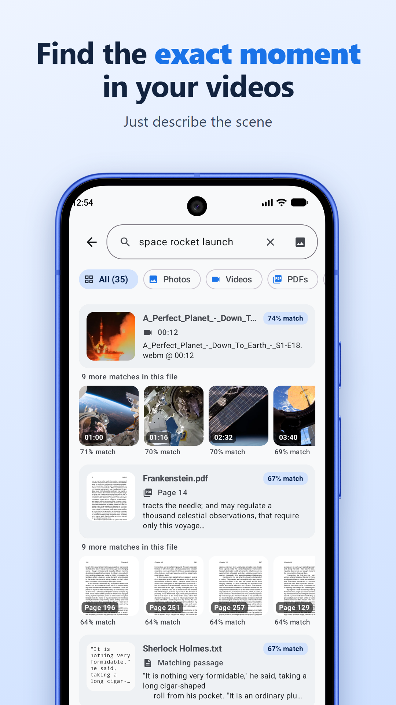
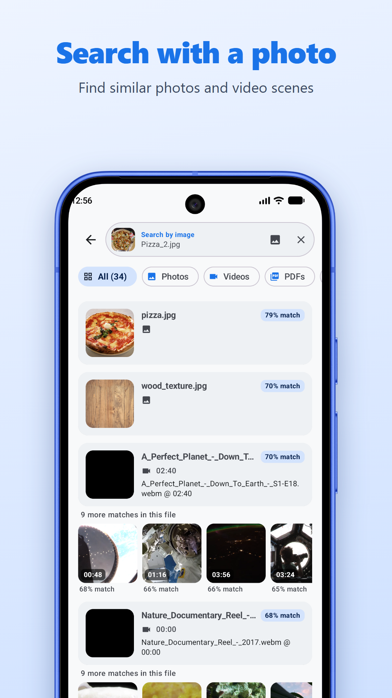
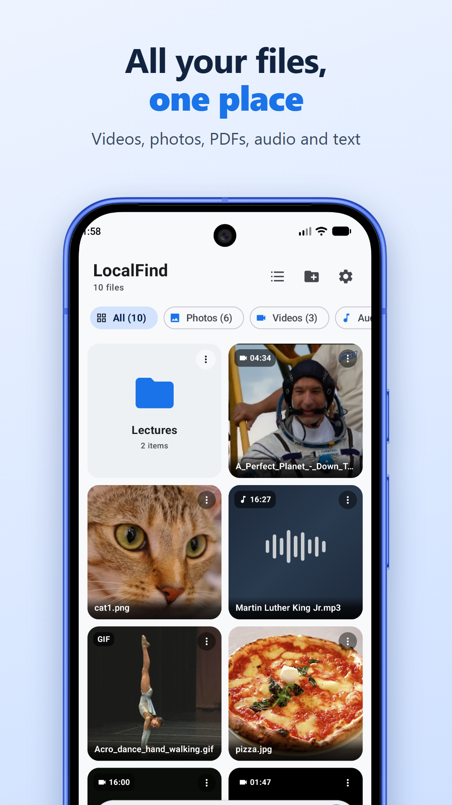
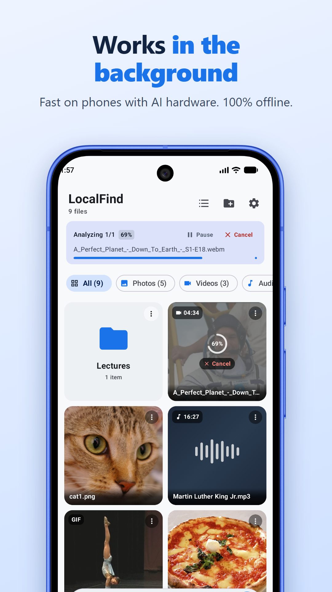

Describe it. Jump to it.
Type what you remember, like "kids blowing out candles" or "discussion about rent". LocalFind jumps straight to that moment in the right video, the right minute of a voice memo, the right page of a PDF, or the matching photo.
- Exact moments: every result shows the time or page, and opens right there.
- Search with a photo to find similar photos and video scenes.
- Videos, photos, PDFs, audio and text in one search box.
- Supports 100+ languages.
- Fast on phones with AI hardware, and works on any modern phone.
- Background indexing you can pause and resume.
Private by design
LocalFind works in airplane mode. It has no internet permission, no account, no ads and no tracking. Your files never leave your phone. Read the privacy policy.
Open source
LocalFind is free and open source under the Apache 2.0 license. View the code on GitHub, report a problem, or suggest a feature in the issue tracker.